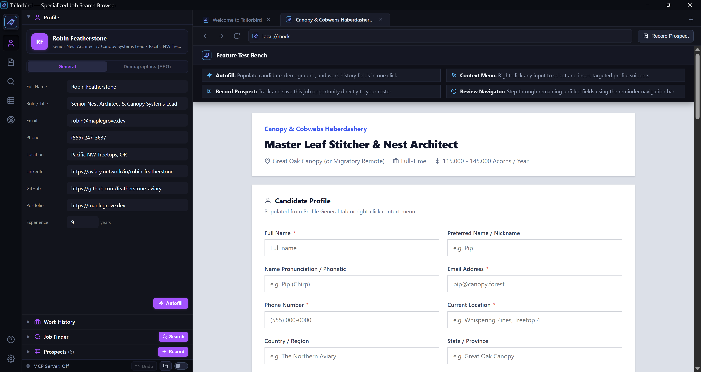
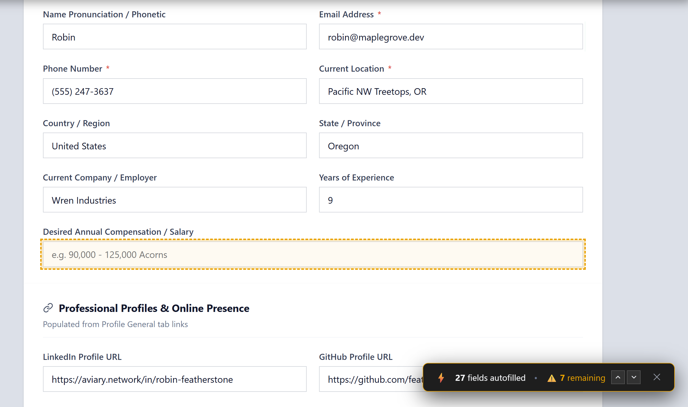
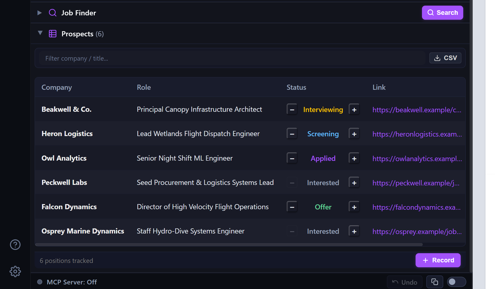

Tired of 37 open tabs, lost spreadsheets, and typing your contact details for the 400th time? Tailorbird pairs your candidate profile, work history, and tracking pipeline directly next to a dedicated browser pane.
Everything you need to apply, research, and follow up without switching windows or juggling clunky spreadsheets.
Keep your reference notes, portfolio links, and complete work history locked right beside the application form. No split screen gymnastics or lost context.


Stop typing your name, email, address, and profile links for every company you apply to. Search and fill common fields across top ATS platforms—including Greenhouse, Lever, Ashby, Workable, Rippling, SmartRecruiters, BambooHR, iCIMS, and Workday—with a single click.
Capture job listings with one click as you discover them. Track status from initial prospect through interview rounds and offers without giving your data to cloud ad trackers.
tailorbird_data.json

No accounts, no telemetries, no subscriptions. Your candidate resume data and application notes never leave your personal computer.
Engineered for responsiveness with instant cold starts and minimal memory footprint. Keeps your machine humming smoothly under heavy multi-tab hunts.
Organize key decision-makers, company leaders, and custom value propositions before openings go public. Export to CSV whenever needed.
Connect your favorite AI assistant via Model Context Protocol (MCP). Let Claude, Cursor, Windsurf, Antigravity, or OpenCode research roles, tailor bullet points, and manage your pipeline directly in Tailorbird.
Exposes 8 native tools (get_tailorbird_data, add_prospect, set_work_history, upsert_special_field) so your agent can take direct action.
Complete confidence and safety. Every write operation automatically creates a pre-write snapshot in the app footer. Revert any agent change with one click.
The MCP server runs exclusively on http://127.0.0.1:42427/mcp. Zero cloud hops, zero telemetry, and your candidate data stays completely private.
// 1. Native HTTP Clients (Cursor, Antigravity, Windsurf, VS Code)
{
"mcpServers": {
"tailorbird": {
"url": "http://127.0.0.1:42427/mcp"
}
}
}
// 2. Claude Desktop (claude_desktop_config.json via mcp-remote bridge)
{
"mcpServers": {
"tailorbird": {
"command": "npx",
"args": ["-y", "mcp-remote", "http://127.0.0.1:42427/mcp"]
}
}
}Tailorbird is open source. Clone the repository and run the application locally on your machine in seconds.
# 1. Clone the repository
$ git clone https://github.com/joelstransky/Tailorbird.git
$ cd Tailorbird
# 2. Run the desktop application locally
$ cargo run
# 3. Or build optimized release executable
$ cargo build --release